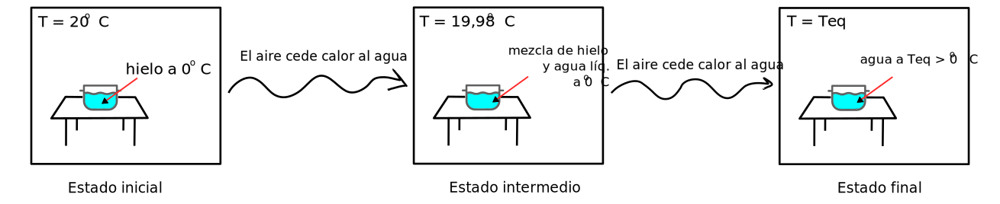
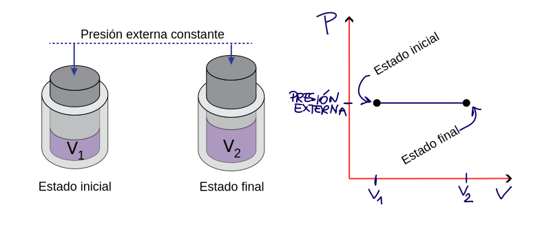
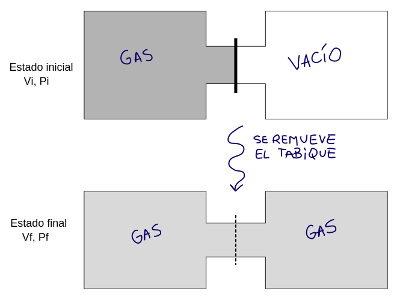

Procesos Reversibles / Procesos Irreversibles
Proceso Reversible
Es una sucesión de estados de equilibrio.
¿Cuáles de los siguientes procesos son reversibles y cuáles irreversibles?
Una olla con hielo en una habitación aislada del exterior

El agua y el aire solo están en equilibrio en el estado final. Desde el comienzo y en los estados intermedios, las temperaturas del agua y del aire son diferentes entre sí, no están en equilibrio. Entonces es un proceso irreversible.
Gas que se expande contra una presión constante

El diagrama P-V muestra una curva contínua, por lo tanto se conocen los valores de P y V en cada estado intermedio, y el gas se encuentra permanentemente en equilibrio con el entorno. Como es una sucesión de estados de equilibrio entonces es un proceso reversible.
Gas que se expande contra vacío

Los estados inicial y final son estados de equilibrio, las presiones y los volúmenes están bien definidos. Pero durante la expansión, el gas no está en equilibrio, entonces es un proceso irreversible.